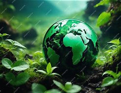

Inicio | El agua | El aire | El suelo | Reciclaje | Animales y plantas | Conoce más

El medio ambiente es todo lo que nos rodea: el agua, el aire, el suelo, las plantas y los animales. Cuidarlo es muy importante porque de él depende nuestra vida. En esta página vas a conocer cómo cuidarlo.